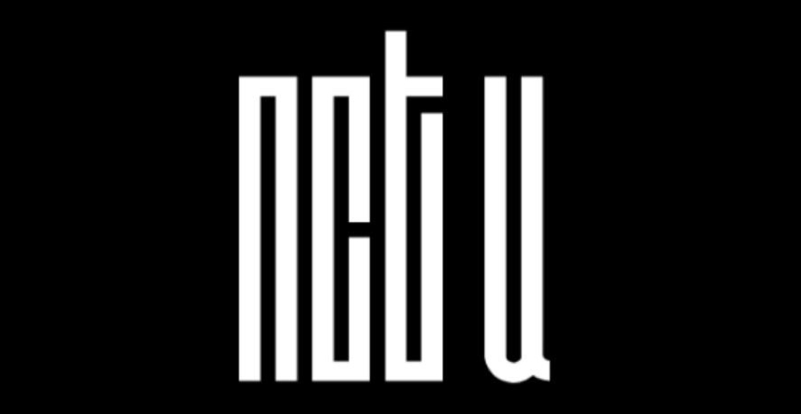

NCT U
U為United的縮寫。 是指在NCT的品牌之下，於世界各地活動的各組子團的通稱， 依歌曲風格，變化成員組成，無固定成員。
1.泰一、泰容、道英、Ten、在玹、Mark出道 2.泰一、泰容、在玹、Mark與新成員悠太、昀昀、楷燦組成小分隊NCT 127 3.Mark、楷燦與新成員仁俊、Jeno、渽民、辰樂、志晟組成小分隊NCT DREAM 4.道英與新成員Johnny加入NCT 127 5.新成員錕、廷祐、Lucas加入 6.廷祐加入NCT 127 7.昀昀為準備中國出道暫停NCT 127活動 8.Mark從NCT DREAM畢業並專任NCT 127 9.錕、Ten、昀昀,與新成員肖俊、Hendery、揚揚組成小分隊WayV 10.NCT DREAM畢業制度取消Mark回歸NCT DREAM 11.新成員將太郎、成燦加入
NCT 正規專輯 2018年：NCT 2018 Empathy 2020年：NCT 2020 : RESONANCE Pt. 1 2020年：NCT 2020 : RESONANCE Pt. 2 2021年：Universe 數位單曲 2020年：RESONANCE NCT U 數位單曲 2016年：The 7th Sense 2016年：Without You 2018年：Baby Don't Stop（泰文）
專屬節目 2016年至今：《NCT LIFE》系列 2020年：《NCT WORLD 2.0》 廣告代言 2016年 NCT U、NCT 127 樂天免稅店 免稅商店 Ivy Club 校服廣告 2017年 NCT U Masita Seaweed 泰國人氣零食 2018年 NCT 2018 Elite 校服廣告 2019年 NCT 127、NCT Dream Elite 校服廣告
演唱會 NCT: RESONANCE 'Global Wave'（2020年12月27日） SHOWCASE NCT - 'NCT 2018 EMPATHY' SHOWCASE 2018年3月14日 首爾花井體育館 NCT 2018 粉絲見面會 Hello, NCT 2018 Sweet Valentine's Day ♥ 2018年2月14日 首爾三成洞 SMTOWN@coexartium NCT 2018 NCT 2018 FAN PARTY『SPRING』 2018年5月7日 首爾高麗大學華政體育館 NCT 2018 NCT U (TAEYONG x TEN) FAN MEETING in BANGKOK 2018年6月3日 泰國曼谷 GMM Live House 泰容、Ten
Instagram Twitter FaceBook YouTube